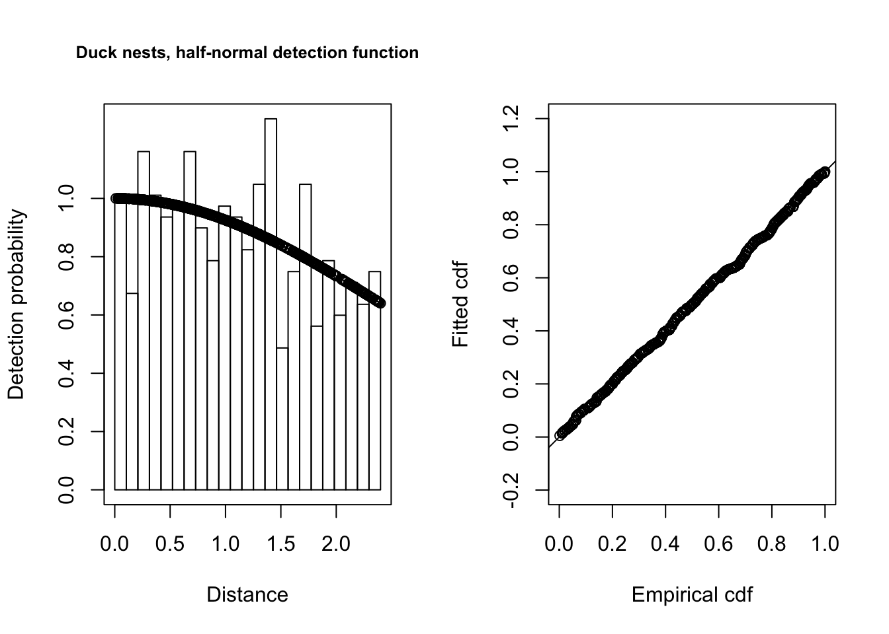
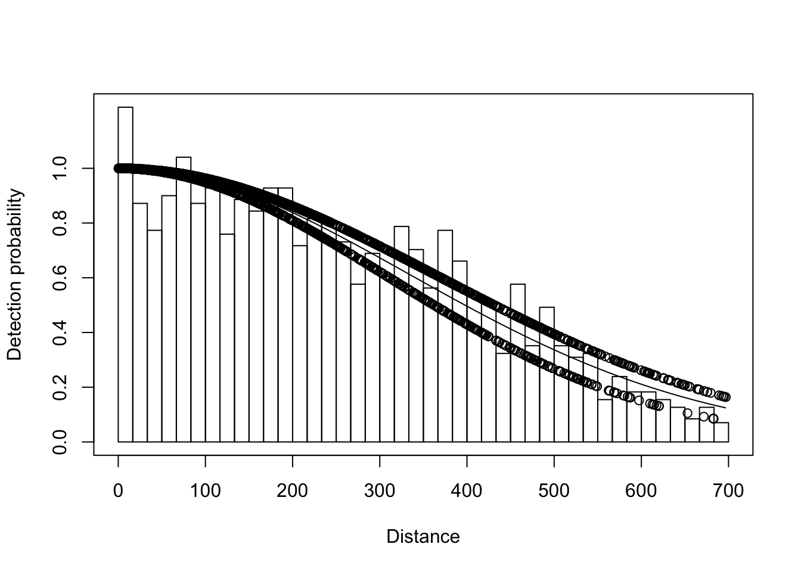
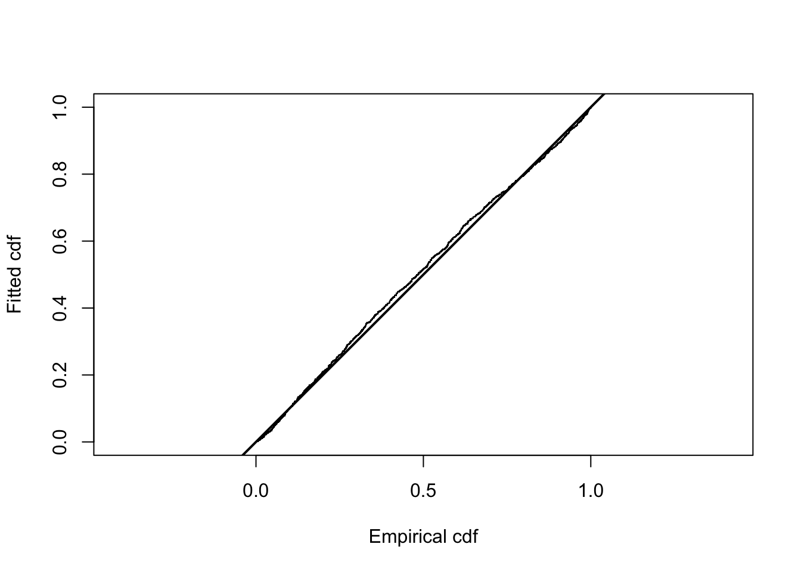

3 Problem datasets
You can use this session in one (or both) of two ways.
Firstly, you can use it to get more practice and guidance on analysis of fairly straightforward distance sampling data in R. In this case, have a look at the Ducknest and Crabeater Seal examples below.
Secondly, you can challenge yourself with the analysis of some more complex or problematic datasets, focussing on detection function estimation, using either Distance for Windows or R. We do not provide any specific instructions if you’re using R. This this case, have a look at the examples starting with Capercaillie.
There are many more examples here than you have time to look at in this session - but they will give you something to work on in open sessions later (or perhaps at home) if you don’t have your own data.
3.1 Ducknest
The following code performs a simple analysis of the Monte Vista ducknest data in R. You will be very familiar with this dataset if you came on an Introductory course previously.
#Read in the data
#The following command only works if ducknests.csv is in your current directory.
#In RStudio you can use the menu item Session | Set working directory to achieve this
#Or you can use the setwd() function in the R console
ducknests <- read.csv("ducknests.csv")
#Show the first few lines
head(ducknests)## Region.Label Area Sample.Label Effort distance
## 1 Monte_Vista_NWR 0 1 128.75 0.06
## 2 Monte_Vista_NWR 0 1 128.75 0.07
## 3 Monte_Vista_NWR 0 1 128.75 0.04
## 4 Monte_Vista_NWR 0 1 128.75 0.01
## 5 Monte_Vista_NWR 0 1 128.75 0.37
## 6 Monte_Vista_NWR 0 1 128.75 0.36#Fit detection functions - convert.units is necessary because the effort is in km but the distances are in m.
library(Distance)
halfnorm.ducks <- ds(ducknests, key="hn", adjustment="cos", convert.units = 0.001)## Starting AIC adjustment term selection.## Fitting half-normal key function## Key only model: not constraining for monotonicity.## AIC= 928.134## Fitting half-normal key function with cosine(2) adjustments## AIC= 929.872##
## Half-normal key function selected.unifcos.ducks <- ds(ducknests, key="unif", adjustment="cos", mono="strict", convert.units = 0.001)## Starting AIC adjustment term selection.## Fitting uniform key function with cosine(1) adjustments## AIC= 928.48## Fitting uniform key function with cosine(1,2) adjustments## AIC= 929.383##
## Uniform key function with cosine(1) adjustments selected.hazard.ducks <- ds(ducknests, key="hr", adjustment="poly", convert.units = 0.001)## Starting AIC adjustment term selection.## Fitting hazard-rate key function## Key only model: not constraining for monotonicity.## AIC= 929.793## Fitting hazard-rate key function with simple polynomial(2) adjustments## AIC= 931.799##
## Hazard-rate key function selected.#Compare the models
summarize_ds_models(halfnorm.ducks,unifcos.ducks,hazard.ducks,output="plain")## Model Key function Formula
## 1 halfnorm.ducks Half-normal ~1
## 2 unifcos.ducks Uniform with cosine adjustment term of order 1 <NA>
## 3 hazard.ducks Hazard-rate ~1
## C-vM $p$-value Average detectability se(Average detectability) Delta AIC
## 1 0.9554163 0.8693482 0.03902053 0.0000000
## 2 0.8208424 0.8464379 0.04407163 0.3458518
## 3 0.9806443 0.8890698 0.04958136 1.6596033#Here's another way to get the AIC values out -- more clunky and less informative
cat("AIC HN=", AIC(halfnorm.ducks), "AIC UNIF=", AIC(unifcos.ducks), "AIC HZ=", AIC(hazard.ducks))## AIC HN= 928.1338 AIC UNIF= 928.4797 AIC HZ= 929.7934#Plot selected function and goodness of fit
par(mfrow=c(1,2))
plot(halfnorm.ducks, main="Duck nests, half-normal detection function")
fit.test <- ddf.gof(halfnorm.ducks$ddf)
par(mfrow=c(1,1))summary(halfnorm.ducks)##
## Summary for distance analysis
## Number of observations : 534
## Distance range : 0 - 2.4
##
## Model : Half-normal key function
## AIC : 928.1338
##
## Detection function parameters
## Scale coefficient(s):
## estimate se
## (Intercept) 0.9328967 0.1703933
##
## Estimate SE CV
## Average p 0.8693482 0.03902053 0.04488481
## N in covered region 614.2533225 29.19683067 0.04753223
##
## Summary statistics:
## Region Area CoveredArea Effort n k ER se.ER
## 1 Monte_Vista_NWR 12.36 12.36 2575 534 20 0.2073786 0.007970756
## cv.ER
## 1 0.03843576
##
## Density:
## Label Estimate se cv lcl ucl df
## 1 Total 49.69687 2.936725 0.05909276 44.2033 55.87318 99.55689#Show how to pull some results out of the fitted object
halfnorm.ducks$dht$individuals$summary## Region Area CoveredArea Effort n k ER se.ER
## 1 Monte_Vista_NWR 12.36 12.36 2575 534 20 0.2073786 0.007970756
## cv.ER
## 1 0.03843576halfnorm.ducks$dht$individuals$D## Label Estimate se cv lcl ucl df
## 1 Total 49.69687 2.936725 0.05909276 44.2033 55.87318 99.556893.2 Crabeater seal
This is an aerial survey dataset on crabeater seals in Antarctica that we will encounter later on in the course, when we discuss Mark Recapture Distance Sampling. For the moment, though, the following R code demonstrates an analysis using Multiple Covariate Distance Sampling (MCDS).
The following code demonstrates import of the data into R, and fitting of a simple half-normal detection function examining the possible improvement of the model by incorporating a side of plane covariate.
#Read in data - again, the csv file has to be in your current directory.
crab.covariate <- read.csv("crabbieMCDS.csv")
head(crab.covariate, n=3)## Study.area Region.Label Area Sample.Label Effort distance size side
## 1 Nominal_area 1 1000000 99A21 59.72 144.49 1 R
## 2 Nominal_area 1 1000000 99A21 59.72 125.16 1 L
## 3 Nominal_area 1 1000000 99A21 59.72 421.40 1 L
## exp fatigue gscat vis glare ssmi altitude obsname
## 1 0.0 61.90 1 G N 79 43.05763 YH
## 2 211.7 62.61 1 G N 79 43.05763 MF
## 3 0.0 62.86 1 G N 79 43.05763 MH#make sure side (i.e., side of plane) is stored as a factor
crab.covariate$side<-as.factor(crab.covariate$side)
#fit detection function with side of plane as a covariate
library(Distance)
ds.side <- ds(crab.covariate, key="hn", formula=~side, truncation=700)## Model contains covariate term(s): no adjustment terms will be included.## Fitting half-normal key function## AIC= 22304.742#do some diagnostic plots and a goodness-of-fit test
plot(ds.side)
ds.gof(ds.side, lwd = 2, lty = 1, pch = ".", cex = 0.5)
##
## Goodness of fit results for ddf object
##
## Chi-square tests
## [0,16.7] (16.7,33.3] (33.3,50] (50,66.7] (66.7,83.3] (83.3,100]
## Observed 87.00000 62.000000 55.000000 64.0000000 74.0000000 62.0000000
## Expected 71.08365 70.908986 70.560977 70.0422609 69.3567461 68.5095653
## Chisquare 3.56383 1.119323 3.431699 0.5212413 0.3108538 0.6185186
## (100,117] (117,133] (133,150] (150,167] (167,183]
## Observed 66.0000000 54.000000 63.00000000 60.0000000 66.0000000
## Expected 67.5070094 66.356447 65.06623387 63.6456055 62.1045680
## Chisquare 0.0336421 2.300934 0.06561502 0.2088194 0.2443361
## (183,200] (200,217] (217,233] (233,250] (250,267]
## Observed 66.0000000 51.000000 58.00000000 57.00000000 52.00000000
## Expected 60.4537763 58.704409 56.86804158 54.95651436 52.98180713
## Chisquare 0.5088284 1.011132 0.02253163 0.07598432 0.01819389
## (267,283] (283,300] (300,317] (317,333] (333,350]
## Observed 41.000000 4.900000e+01 43.0000000 56.000000 50.000000
## Expected 50.955913 4.889072e+01 46.7978830 44.688750 42.574232
## Chisquare 1.945215 2.442777e-04 0.3082173 2.863011 1.295197
## (350,367] (367,383] (383,400] (400,417] (417,433] (433,450]
## Observed 40.000000000 55.000000 47.000000 38.0000000 36.0000000 23.00000
## Expected 40.464730827 38.370066 36.299403 34.2612089 32.2632053 30.31234
## Chisquare 0.005337358 7.207564 3.154398 0.4079996 0.4328037 1.76398
## (450,467] (467,483] (483,500] (500,517] (517,533]
## Observed 41.000000 25.00000000 35.000000 25.0000000 22.00000000
## Expected 28.414787 26.57590205 24.800267 23.0916811 21.45318747
## Chisquare 5.574126 0.09344809 4.194896 0.1577053 0.01393751
## (533,550] (550,567] (567,583] (583,600] (600,617]
## Observed 23.0000000 11.000000 1.700000e+01 13.000000 13.0000000
## Expected 19.8871031 18.395054 1.697802e+01 15.636363 14.3699089
## Chisquare 0.4872568 2.972909 2.846396e-05 0.444503 0.1305959
## (617,633] (633,650] (650,667] (667,683] (683,700] Total
## Observed 11.0000000 9.0000000 6.00000 9.0000000 5.000000 1740.0000
## Expected 13.1779664 12.0593944 11.01265 10.0358528 9.126811 1740.0000
## Chisquare 0.3599597 0.7761496 2.28162 0.1069158 1.865993 52.8995
##
## P = 0.067893 with 39 degrees of freedom
##
## Distance sampling Kolmogorov-Smirnov test
## Test statistic = 0.026577 P = 0.1711
##
## Distance sampling Cramer-von Mises test (unweighted)
## Test statistic = 0.33454 P = 0.10836#compare with a model that does not have side of plane as a covar
ds.noside <- ds(crab.covariate, key="hn", truncation=700)## Starting AIC adjustment term selection.## Fitting half-normal key function## Key only model: not constraining for monotonicity.## AIC= 22314.398## Fitting half-normal key function with cosine(2) adjustments## AIC= 22308.645## Fitting half-normal key function with cosine(2,3) adjustments## AIC= 22304.015## Fitting half-normal key function with cosine(2,3,4) adjustments## AIC= 22305.943##
## Half-normal key function with cosine(2,3) adjustments selected.summarize_ds_models(ds.side,ds.noside,output="plain")## Model Key function Formula
## 2 ds.noside Half-normal with cosine adjustment terms of order 2,3 ~1
## 1 ds.side Half-normal ~side
## C-vM $p$-value Average detectability se(Average detectability) Delta AIC
## 2 0.9759692 0.5982664 0.02720373 0.0000000
## 1 0.1083600 0.5825754 0.01245102 0.7277174What is your conclusion so far? Are there other diagnostics you might want to run, or other models you might want to fit?
3.3 Capercaillie
This is a fairly straightforward dataset from a line transect survey of capercaillie (a large grouse) in Scotland. Feel free to skip over this example if you are quite confident in the analysis of conventional line transect data.
There is one minor issue in the distances, which does not affect the results much. If you decide to analyze these data, see if you can tell what is is.
The data are given in the form of a tab-delimited text file. The size of the study area is not known, so it is given as 0 so we can estimate capercaillie density but not abundance. Also, we do not have individual line data; we just know that the total line length was 240km. So, we’ll be able to estimate density, but not get an accurate estimate of variance, because we won’t be able to calculate between-line variance in encounter rate.
3.4 Amakihi
The Amakihi is a Hawaiian forest bird. The dataset you have here is from a point transct survey, which had 7 geographic strata. Try analyzing the data and select a detection function to use for inference. In addition to a conventional distance sampling analysis, try the available covariates to see if you can obtain more relaible stratum-level estimates of density. Potential covariates are month, observer (OBS), minutes after sunrise (MAS) and hours after sunrise (HAS).
These data were used as the motivating example in a paper describing Multiple Covariate Distance Sampling (Marques et al. 2007), and also in Section 5.3.2.1 of the new Distance Sampling book (Buckland et al. 2015); you have the paper on your data stick and a hard copy of the book, so once you’ve finished your analysis, you can compare what you found with their analysis. (An analysis file is also available on the book web site https://synergy.st-andrews.ac.uk/ds-manda/)
3.5 Odd spike data set
These data are not real! - they are synthetic. Try fitting detection functions without the monotonicity constraint, and use model selection to decide which model is the most parsimonious.
3.6 Blue monkey data set
These data are real, unfortunately. They are on groups of monkeys from a line transect survey in tropical forest. What is the major issue with these data? What questions would you like to ask the data gatherers in order to decide how the data might be salvaged? In the absence of such information, what are your thoughts about the best way to analyze the data to infer detectability?